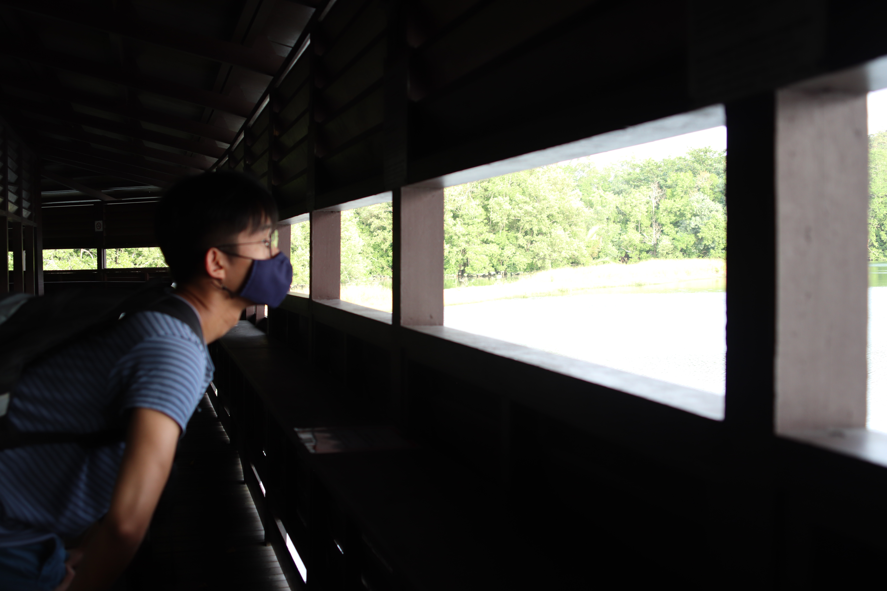

First opened in 1993, Sungei Buloh Wetland Reserve is a wet, glorious haven for mangroves, monitor lizards, and a generous variety of fauna and flora. It is part of the East Asian Australasian Shorebird Site Network- being recognized as a key site for migratory birds.
Sungei Buloh Wetland Reserve holds a special place in my heart. There, I found respite from the unforgiving concrete jungle.
I hope to convince you to do yourself a favour and visit it as I have done.
The Reserve is organized into four main sections:

Fret not about bringing a copy of the map; there are maps located within the Reserve itself that will show you the way.
Spanning 1300m, the Coastal Trail brings you -as the name suggests- around the coast of the Reserve.
Eagle Point is one of its signature locations. It provides a sublime seaview and you can even see the Malaysian coast opposite.
Expect powerful and refreshing winds.


Dotted along the Coastal Trail are ‘Pods’, which are nifty acorn-shaped structures.


Adjoining the Coastal Trail, the Forest Trail is an alternative path visitors can take from the Visitor Centre.
It checks all the boxes for an immersive hike- creatures, mud, and a surrounding green, leafy infinity that overwhelms your senses.


Bridging the early portion of the Coastal Trail with the Forest Trail, the Mid-Canopy Walk feels less like a trivial detour and more like a transcendental journey in the liminal space between.

The Migratory Bird Trail is an epic, 1.95km of a walk that will test your physical fitness while rewarding you with stunning views of some of the Reserve's finest greenscapes.
The first part of the trail is a long bridge traversing a river. You may be able to witness an Estuarine crocodile in its natural habitat.


Past the bridge is the Buloh Tidal Ponds. Encircling it is the main path.


Along the main path are Hides that serve as viewing points from which you can take in the breathtaking Buloh Tidal Ponds.
The 4 main paths detailed above form the bulk of the Reserve, but there are a few other locations of interest to look out for.
There is a Visitor Centre which will likely be the first place you visit, depending on which entrance to the Reserve you take.
The toilets and emergency first aid equipment are available here.


Adjacent to the Migratory Bird Trail is the Wetland Centre. There's some vending machines here if you need to restore your blood sugar levels after the long walk there. Toilets and first aid equipment are present as well.

There is some educational material present at the Wetland Centre.
Take it as an opportunity to teach your kids a thing or two about Singapore's ecology.
Do you feel exasperated from the concrete jungle? Sick of meetings and business calls?

Come and find rest.

I hope I've convinced you to pay Sungei Buloh Wetland Reserve a visit. It truly is a special place.
Open 0700hrs-1900hrs
Free Entry
60 Kranji Way, #01-00 Singapore 739453
Parking lots are available near the entrance
Click on the images to find out more